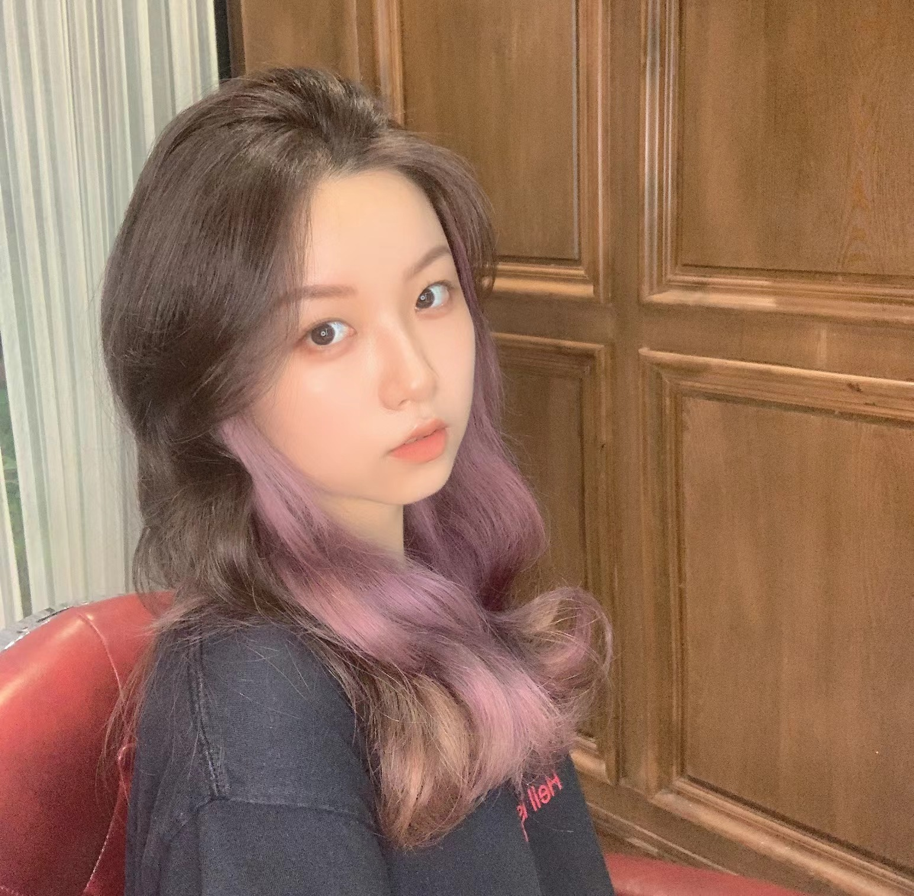

Lai Jiang 「姜来」
Master Student @ USC

Email: ljiang89@usc.edu
LinkedIn: https://www.linkedin.com/in/lai-jiang-512821189/

About Me
I'm a second-year Master's student at Viterbi school of Engineering at the University of Southern California. I obtained my B.S. degree in Civil Engineering Department at Chongqing University, 2020. With a strong interest in AI, I changed my career path and took a gap year in 2021 to intern at SenseTime Research as an assistant project manager.
Now I am living in LA for the M.S. degree in Engineering Management, and looking forward to an opportunity to start a career as a project manager.
Education
University of Southern California, Los Angeles, CA, USA
- M.S. in Engineering Management
- Expected: December 2022
Chongqing University, Chongqing, China
- B.S. in Cost Engineering
Certifications
Project Management Professional (PMP)
- Project Management Institute
- Credential ID: 3300558
Experiences
SenseTime Research - Technical Project Manager
- Managed stakeholders all over the world for 4 cross-functional agile teams (NerveX reinforcement learning framework R&D, DI-drive autonomous driving framework R&D, AI game R&D, virtual idol R&D) by hosting daily standups and coordinating weekly status reports.
- Created knowledge base on Confluence of 45 internal resources, reduced time spent per project on administrative tasks by 30% and improved employee’s on-boarding experience.
- Coordinated and communicated with 10 team leaders of the Artificial General Intelligence department and the finance department to adjust and saved 15% of the budget.
- Communicated and partnered with clients in product development phase, defined scope, broke down and prioritized requirements.
- Conducted market research of motion capture product market, presented report to stakeholders, negotiated with vendors and leased the device at a price 50% lower than the market average.
Colliers International - Commercial Real Estate Intern
- Standardized report templates, reduced time spent per report by 40%.
- Made 20+ phone calls a day to collected information of Beijing’s real estate market.
- Conducted industry research, wrote consulting service reports and presents to clients, with 100% clients rating services as trustworthy, insightful and easy to understand.
Leadership & Honors
- 4th prize of CIOB (The Chartered Institute of Building) Global Student Challenge
- Director of Foreign Affair Department, CIOB Student Center, Chongqing University
- Director of Skipsoul Dance Club, Chongqing University
Professional Skills
Project Management Skills: Scrum, Agil Team Managament, WBS, Jira, Confluence, Microsoft Office
Technical Skills: SQL, Python, R, Machine Learning, Data Mining
Core Competence: Leadership, Communicating & Coordinating, Logical Analyzing & Information Sorting, Quick Learning